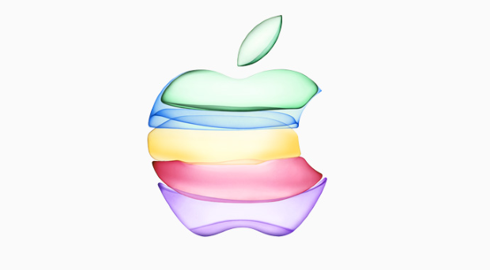

ApplePremier téléphone Apple
iPhone est le nom d'une gamme de smartphone commercialisée par l'entreprise multinationale américaine Apple depuis le 29 juin 2007. Les modèles de la gamme, dont l'interface s'appuie sur écran tactile capacitif multipoint, disposent d'un appareil photo qui fonctionne également comme une caméra, d'un système de géolocalisation intégré permettant une localisation en quelques secondes grâce aux systèmes A-GPS et GLONASS
Premier ordinateur Apple
L'Apple I de la marque Apple, fut l'un des tout premiers micro-ordinateurs individuels.L'Apple I de la marque Apple, fut l'un des tout premiers micro-ordinateurs individuels.À la différence d'autres ordinateurs amateurs de cette époque, qui étaient vendus en kit, l'Apple I était constitué uniquement d'une carte assemblée comprenant des composants électroniques dont environ 21 circuits intégrés
La pomme
